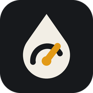

Octano
Polityka prywatności
Obowiązuje od 27 października 2026 r.
Aplikacja Octano (dziennik tankowań, ładowań, serwisów i kosztów samochodu) jest udostępniana przez dewelopera HofiTech, który jest administratorem w rozumieniu RODO w zakresie opisanym poniżej.
Jakie dane przetwarza aplikacja
Aplikacja zapisuje wyłącznie dane, które wpiszesz samodzielnie: informacje o samochodzie (nazwa, numer rejestracyjny, VIN, zdjęcie), tankowania i ładowania, serwisy, naprawy i inne koszty, przypomnienia oraz zdjęcia paragonów i faktur.
Wszystkie te dane są przechowywane tylko na Twoim urządzeniu. Aplikacja nie ma kont użytkowników, nie wysyła Twoich danych na serwery dewelopera i nie udostępnia ich nikomu. Deweloper nie ma do nich dostępu.
Lokalizacja
Lokalizacja jest używana tylko wtedy, gdy naciśniesz przycisk „Stacje w pobliżu”. Twoje przybliżone współrzędne są wtedy jednorazowo wysyłane do publicznej usługi OpenStreetMap Overpass API (overpass-api.de), aby wyszukać stacje paliw lub ładowania w promieniu 3 km. Lokalizacja nie jest zapisywana w aplikacji ani przekazywana deweloperowi. Zasady usługi: OpenStreetMap – Privacy Policy.
Aparat i zdjęcia
Dostęp do aparatu lub galerii jest używany tylko wtedy, gdy sam dodajesz zdjęcie samochodu, paragonu lub faktury. Zdjęcia są zmniejszane i zapisywane wyłącznie na urządzeniu.
Powiadomienia
Po Twojej zgodzie aplikacja pokazuje przypomnienia o zaplanowanych terminach (np. ubezpieczenie, przegląd). Są one tworzone lokalnie na urządzeniu.
Kopia zapasowa
Gdy użyjesz eksportu danych, plik z kopią trafia tam, gdzie go wyślesz (np. Dysk Google, e-mail). Za to miejsce odpowiada wybrany przez Ciebie dostawca usługi.
Reklamy, analityka, śledzenie
Aplikacja nie zawiera reklam, narzędzi analitycznych ani mechanizmów śledzenia.
Twoje prawa
Masz pełną kontrolę nad danymi: możesz je w każdej chwili przeglądać, edytować, eksportować i usuwać w aplikacji. Odinstalowanie aplikacji usuwa wszystkie zapisane w niej dane. Ponieważ deweloper nie przechowuje Twoich danych, nie musi ich usuwać ani udostępniać na żądanie. Masz prawo wnieść skargę do Prezesa Urzędu Ochrony Danych Osobowych (uodo.gov.pl).
Dzieci
Aplikacja nie jest skierowana do dzieci poniżej 13. roku życia.
Zmiany i kontakt
O istotnych zmianach tej polityki (np. po wprowadzeniu kont lub synchronizacji) poinformujemy w aplikacji i na tej stronie. Kontakt z deweloperem: github.com/hofi9014/refuelling/issues.
Privacy Policy
Effective from 27 October 2026.
The Octano app (a log of fill-ups, charging, service and car costs) is provided by the developer HofiTech, the data controller under the GDPR to the extent described below.
What data the app processes
The app stores only the data you enter yourself: car details (name, licence plate, VIN, photo), fill-ups and charging sessions, service, repairs and other costs, reminders, and photos of receipts and invoices.
All of this data is stored only on your device. The app has no user accounts, does not send your data to the developer's servers and does not share it with anyone. The developer has no access to it.
Location
Location is used only when you tap the “Nearby stations” button. Your approximate coordinates are then sent once to the public OpenStreetMap Overpass API (overpass-api.de) to find fuel or charging stations within 3 km. Your location is not stored by the app or passed to the developer. Service policy: OpenStreetMap – Privacy Policy.
Camera and photos
Camera or gallery access is used only when you add a photo of your car, a receipt or an invoice yourself. Photos are downscaled and stored only on your device.
Notifications
With your permission, the app shows reminders about scheduled due dates (e.g. insurance, roadworthiness test). They are created locally on your device.
Backups
When you export your data, the backup file goes wherever you send it (e.g. Google Drive, e-mail). That place is the responsibility of the provider you choose.
Ads, analytics, tracking
The app contains no ads, analytics or tracking.
Your rights
You are in full control of your data: you can view, edit, export and delete it in the app at any time. Uninstalling the app deletes all data stored in it. As the developer does not hold your data, there is nothing for the developer to delete or hand over on request. You have the right to lodge a complaint with a data protection authority.
Children
The app is not directed at children under 13.
Changes and contact
We will announce significant changes to this policy (e.g. if accounts or sync are introduced) in the app and on this page. Contact the developer: github.com/hofi9014/refuelling/issues.